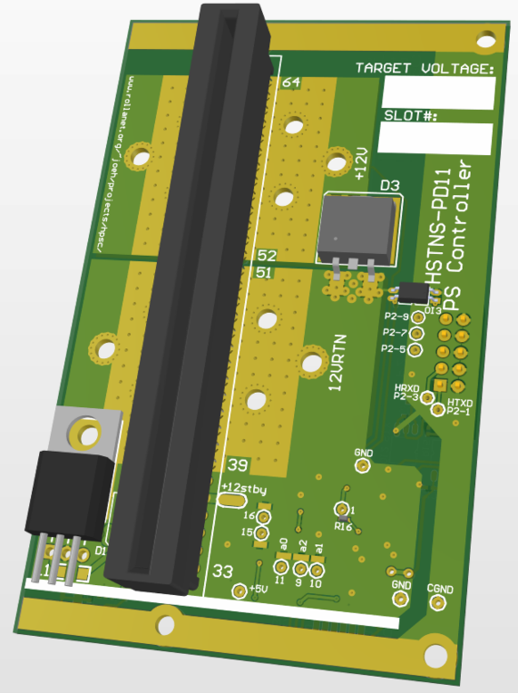
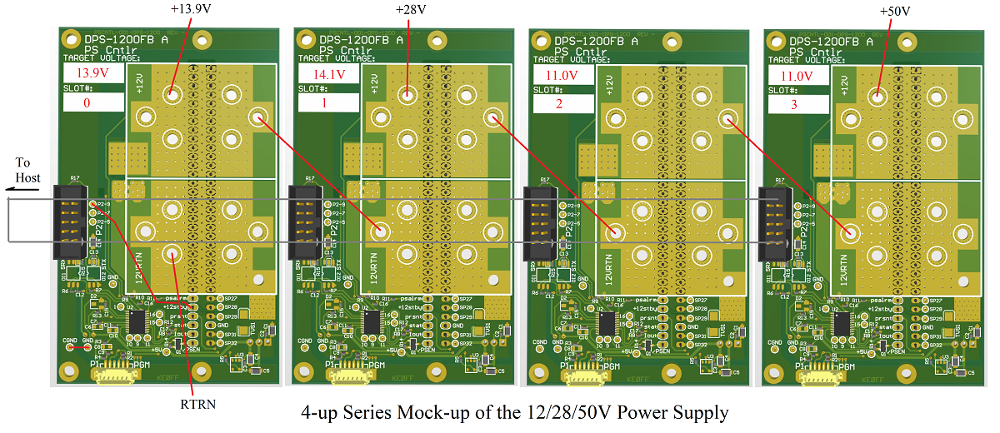

|  |
|
| This project was born quite by chance when I happened upon three DPS-1200FB A power supplies at a friend's garage sale - $30 and they were all mine. Well, OK... it was born a bit later, but this was the trigger. I needed to produce a 50V, "BIG-AMP" (e.g., more than 25), DC power supply for a linear amplifier project. Turns out, these server supplies (and others like them) are rather easy to find and are relatively cheap. With some modifications, they can be made to produce at least 14V and have an isolated DC ground. Thusly modified, four such supplies in series can produce 50Vdc at up to 66A (minimum - more if operated at 220Vac input). Since I had three of them, I needed another. After a brief ponderance, I decided that I needed more - my initial research suggested that repairing these supplies would be a challenge since they use programmable microcontrollers, and at least one part for which I can't find any data. e-bay was happy to pony-up 4 more of the supplies, giving me 3 spares. Now I could focus on how to control and connect them. The supplies are controlled by a grounded input (/PSEN) to turn them on. There is also an output pin that produces what "looks" like a current monitor signal (it's behavior deviates below load currents of 3A). A couple of other signals, status and alarm, also begged to be addressed. In truth, only the /PSEN signal is needed to operate the supply, but I wanted to be able to monitor the current and voltage. Since 3 of the 4 supplies were going to have isoladed DC grounds, this posed a problem: for each of those supplies, the local ground reference would be at an ever increasing voltage, up to about 39V. This makes it difficult to handle analog signals. My solution was to use a small microcontroller with a 12b ADC to capture the analog signals. A UART connection back to a central host controller can be easily accomplished using opto-isolators to bridge the gap between local ground and "actual" ground. Easy-peasy. This web page details the hardware and software design for this project, and serves as a repository for detailed information relating to its construction and use. |
| The C8051F530 is an MCU I’ve used on several other projects, so it was the clear choice here. I only needed some timer resources, the UART, and the on-chip ADC. I located an opto-isolator that could accomodate speeds in excess of 400K baud, tho I'll likely run it slower than that. 38.4K is my minimum desired rate. One of these devices for "TX" and one for "RX" connected so that each side of the UART link is wired "multi-drop" style with an open collector on the slave-RX (SRX) and an LED on the slave-TX (STX). The host drives the RX line with a device that can source 15 or 20 mA with reasonable edges. The Host receives the TX signal and can buffer with a schmitt-trigger style gate. For the power supply side of the optical barrier, the signals I want to process are: PS Alarm (pin 38, out from the supply), Power supply Present (36), Power supply status (35, out), Imeasure (34, out), and PS Enable (33, in). The documentation for these signals has not been easy to locate. I've found some folks who have blazed the trail before me, but they didn't appear to be working from an official document which described the function of these signals. Faced with a lack of info, I will simply capture signals, and display their status for now. As thier functions become more well understood (or verified) I will take steps to act on them in realtime. So, in a nutshell, to make the supply function, one needs to apply a current limited 3.3V to the Present pin (36), and ground PS Enable (33). This will be accomplished with a UART command. The output voltage and Imeasure values are periodically captured and stored. The protocol for the dual-multi-drop UART doesn't allow for the slaves to detect collisions when they transmit. As a result, the protocol prohibits unsolicited UART messages from the slaves. This means that each slave will have to be periodically polled to get their current status. So, the ADC must continually sample and store results for the two analog signals to be monitored: the +12V PS output, and the Imeasure pin from the supply. The +12V (up to +14V) monitor uses a simple resistive voltage divider to present a signal to the MCU ADC. The ADC uses an external 2.5V reference, so the divider needs to ensure that the maximum possible voltage can be reduced to 2.5V or less. Something in the range of 15 to 17 Volts is the current target. For the Imeasure signal, the initial observations are that the slope of the output is about 25mV/ADC above 3A. Below 3A, the slope starts out at around 60mV/A and begins to taper off towards 25mV/A between 2A and 3A. Worst case this means that Imeasure will be just under 2V for a 70A load. I have only characterized Imeasure between 0A and 20A, as this is the range of my electronic load. I need to find a way to spot check it out beyond 20A. Most of the rest of the design has to do with carefully handing the high-current terminations and routing. 2oz copper is one mitigation employed here. Another is to use a lot of stitching vias with a decent size drill hole. Another debate is whether to fill these via holes with solder, PbSn or Ag laced (4% Ag solder gives a small improvement to conductivity) - I think the interconnect resistance will be low enough, so I am reserving this option for later consideration. I'll construct a rack for the 4 supplies, so they will be mounted close to one another and one of these controller boards will attach to each (the image below illustrates the target layout and interconnects). The host electronics will provide a simple UI via an LCD and possibly a 4x4 keypad (for the moment, I only have a use case for one or two buttons, but may want to have the ability for numeric input if it turns out that there are configuration steps required at the host controller level.  |
| The software operates in a single loop which polls for serial data from the host and parses it into actions. It depends heavily on interrupts to handle low level functions like ADC capture and UART I/O which allows for a simple polling loop (the Main Program Loop, or MPL), real-time control system. There is one timer interrupt, and the UART interrupt to be processed. Timer 2 provides a series of count-down-from-N-and-halt application timer registers. The UART interrupt is used to process input and output serial data. Since this is a real-time system, it is important to limit how much time a particular operation can take. The judicious use of interrupts has off-loaded much of the low-level operations. The MPL must take the various inputs and act upon them. Some use of local timing loops is employed, but only where the time value is an isolated and short one, or there is some other means for breaking out of the timing operation. Since the application is relatively straightforward, the use of an RTOS was not viewed as an efficient option for such a small (8K) MCU. The code is a bit complicated in the MPL. This is largely due to the fact that the system must accommodate several state machines to allow for "real-time" response. The object code for the adapter is available here. The "SiLabs Programming guide" describes the steps and items needed to program the project MCU. The source code page describes where and how to access the source repo. |
| See "DPS-1200FB A Modifications" for instructions on modifying the DPS-1200FB A. These instructions are compiled from a couple of sources on the interntet (see below for links to them) and distill down the basics as they pertain to this application (a series-connected array-of-supplies). |
| PSCNTL Source Code Page SiLabs Programming guide PSCNTL-001 Schematic DPS-1200 Modifications |
| Hacking HP Common Slot Power supplies - 12V@100A by Colin Tregenza Dancer (07/27/2020) HP DPS-1200FB A HSTNS-PD11 13.8v mod by djm38fr (07/27/2020) (a you-tube video) |